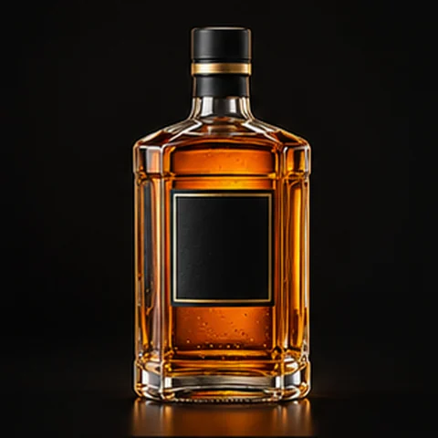
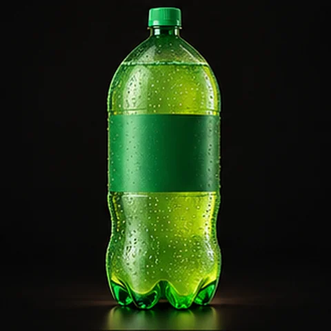
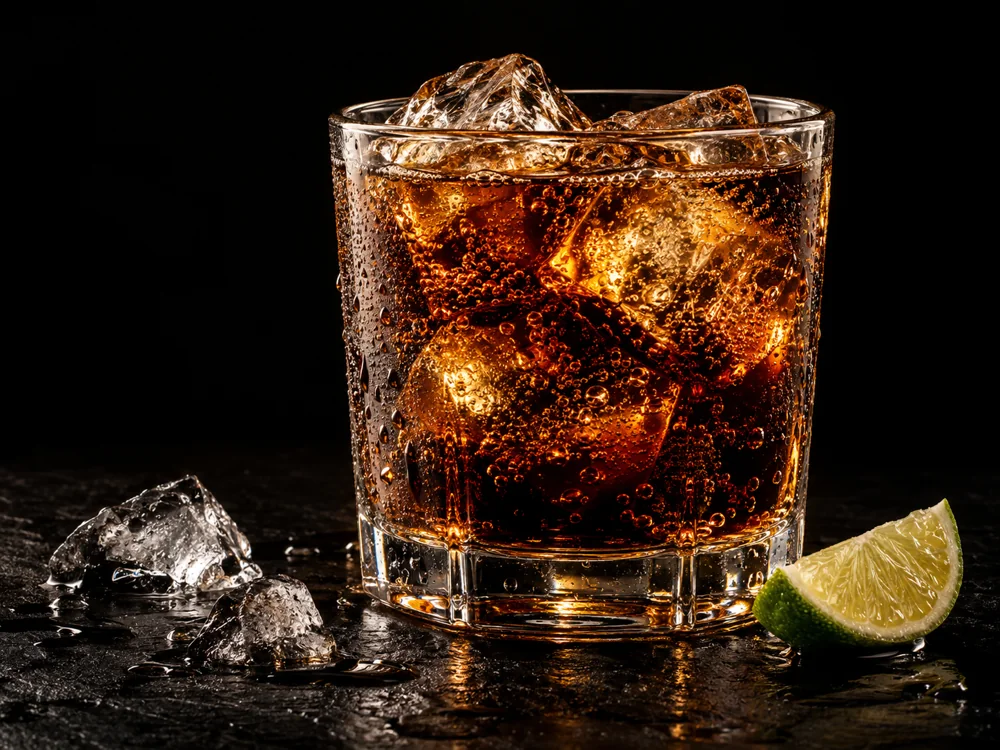

Garrafa · 1 litro
ValoresSob consulta
Toque na imagem para saber maisAdega & Distribuidora
Da primeira conversa ao último brinde. Bebidas e complementos para fazer parte dos seus melhores momentos.
O encontro começa aqui
Um catálogo para explorar com calma.
Encontre sua bebida, descubra novas combinações e complete a sua seleção.

Dos clássicos às novas combinações.
Cervejas, vinhos e destilados.

Refrescância em cada escolha.
Sucos, água e energéticos também.

Gelo para o copo, carvão para a brasa e petiscos para compartilhar.
Catálogo ilustrativo. Valores e disponibilidade sob consulta.
Descubra suas combinações
Escolha uma categoria, veja os detalhes e adicione os itens à sua lista.
Garrafa · 1 litro
Garrafa · 750 ml
Long neck · 330 ml
Garrafa · 2 litros

O frescor estáO simples, bem escolhido
Um refrigerante gelado, um vinho para o jantar ou uma cerveja para o churrasco. Cada encontro tem um jeito de começar.
Refrigerantes, sucos e água para compartilhar com todo mundo.
Complete a mesa com gelo e petiscos. O carvão também está no catálogo.
Escolha pelo momento
Algumas ideias para combinar bebidas e complementos com a sua ocasião.
Cervejas, refrigerantes, gelo e carvão. Uma combinação para reunir a turma.
Ver cervejasVinhos, água e petiscos. Escolhas para acompanhar a conversa à mesa.
Explorar vinhosRefrigerantes, sucos e água. O encontro também pode ser sem álcool.
Ver opções sem álcoolSua bebida preferida, gelo e alguns petiscos para compartilhar.
Escolher os extrasTudo no seu ritmo
Os valores, as marcas e a disponibilidade são sob consulta. Monte uma lista com os produtos desejados e copie a seleção para conversar com a loja.
Toque no botão de adicionar em cada produto. Em “Minha lista”, ajuste as quantidades ou remova itens. Depois, use “Copiar minha lista” para consultar a loja.
Sim. A página de refrigerantes e derivados reúne refrigerantes, água, sucos e energéticos. Você pode filtrar as categorias para encontrar o que procura.
Copie sua lista e consulte os valores e a disponibilidade com a loja.
Selecione o texto abaixo para copiar a sua lista.